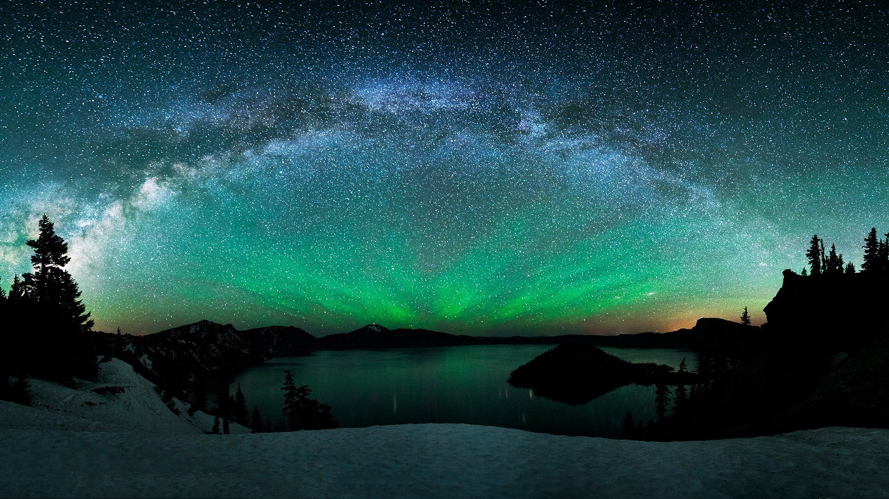
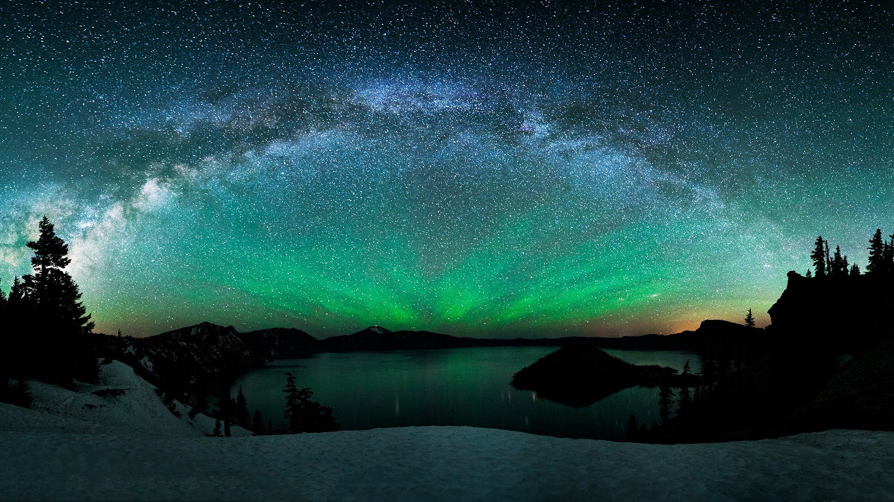
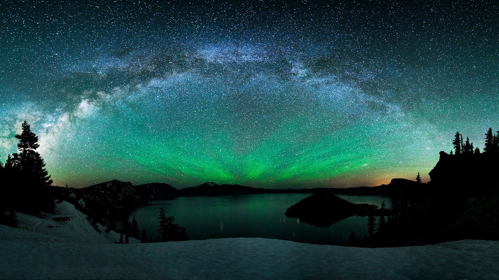
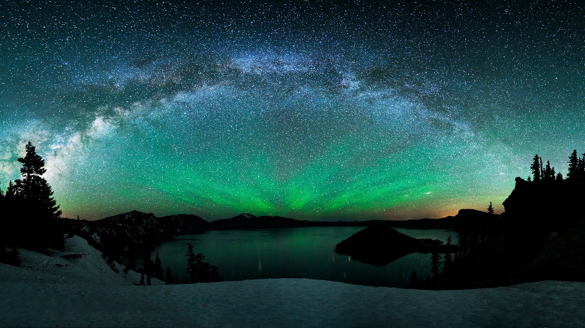

The energy for making the northern lights comes from the Sun. The Sun creates something called the “solar wind”. This is different to the light that we get from the Sun, which keeps us warm and helps us to see during the day. This solar wind drifts away from the Sun through space, carrying tiny particles called protons and electrons. Protons and electrons are some of the tiny building blocks that make up most of the stuff in the universe, like plants and chocolate and me and you.
Sometimes the solar wind is strong, and sometimes it’s weak. We can only see the northern lights at times when the solar wind is strong enough. When the solar wind reaches planet Earth, something very interesting happens: it runs into the Earth’s magnetic field. The magnetic field forces the solar wind away, and makes it travel around the Earth instead. The magnetic field is what makes the needle on a compass point north, and is how birds know where to go when they migrate – it’s also why we have the north and south poles at all.
When the solar wind gets past the magnetic field and travels towards the Earth, it runs into the atmosphere. The atmosphere is like a big blanket of gas surrounding our planet, which contains lots of different particles that make up the air that we breathe and help to protect us from harmful radiation from the Sun. As the protons and electrons from the solar wind hit the particles in the Earth’s atmosphere, they release energy – and this is what causes the northern lights.
By many, this is considered as the Aurora Capital of North America because it is also in the middle of the Auroral Oval. It does, however, have a shorter time period where it can be seen: January through March.

If you are from the United States, this location is much more convenient to visit because you don't need a passport! It is located directly under the Auroral Oval and can be seen anytime from August 21 to April 21.
This location has several attractions in addition to the Northern Lights, such as geothermal pools, volcano tours and quality culture, thus truly making it an ideal tourist spot for many. The best months to see the Northern Lights are between September to April.
You can catch the lights between October and March here, when there is more darkness than light every day. This gives ample opportunity to try and see the northern lights, increasing your chances of seeing them. Lapland has a variety of locations to go to, which you can find here.
This city is based in the heart of the aurora zone in the Norwegian Arctic and is often referred to as one of the best places to see the Northern Lights in the world. Every year, this is a popular destination from September all the way until late March.